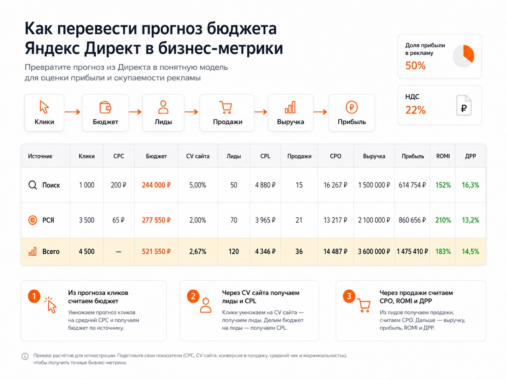

Блог о платном трафике
Прогноз бюджета в Яндекс Директе: как рассчитать расходы, клики и заявки
Как оценить стоимость поискового трафика до запуска рекламы и перевести прогноз кликов в заявки, продажи, CPL, CPO и ДРР.
Если вы ищете прогноз Яндекс Директ, скорее всего, хотите понять, сколько денег потребуется на рекламу до ее запуска. Для этого у Яндекса есть отдельный инструмент - Прогноз бюджета.
Он оценивает спрос, количество показов и кликов, ставки и примерные расходы по выбранным ключевым фразам и регионам. Но есть существенное ограничение: этот расчет относится к рекламе на основном Поиске Яндекса. РСЯ инструмент не прогнозирует.
И еще один момент: сам Яндекс помогает оценить стоимость трафика, но не отвечает на главный для бизнеса вопрос - сколько заявок и продаж принесет этот бюджет. Для этого прогноз нужно продолжить уже через конверсию сайта и экономику бизнеса.
Что показывает Прогноз бюджета Яндекс Директа
Сервис предназначен для предварительной оценки поисковой рекламной кампании. Для расчета используются выбранный регион, период и список ключевых фраз.
Яндекс строит прогноз с учетом статистики по объявлениям, сезонности и трендов. В расчете используются ставки, количество показов и кликов по выбранным фразам.
На выходе можно оценить:
- объем поискового спроса;
- прогнозируемые показы;
- возможное количество кликов;
- ориентировочную стоимость перехода;
- ставки;
- общий объем расходов.
Названия отдельных показателей в интерфейсе могут меняться, но задача инструмента остается той же - понять примерную стоимость и объем поискового трафика до запуска рекламы.
Это полезнее, чем пытаться угадать бюджет фразой вроде «обычно в этой нише нужно 50 000 рублей». Одинаковая услуга в разных регионах и при разной семантике может иметь совершенно разную стоимость трафика.
Если вы пока плохо представляете разницу между поисковой рекламой и РСЯ, сначала можно прочитать мою статью как работает Яндекс Директ.
Как сделать прогноз бюджета в Яндекс Директе
1. Откройте инструмент
Перейдите в Прогноз бюджета Яндекс Директа. Для работы потребуется авторизация в аккаунте Яндекса.
В интерфейсе Директа этот же раздел находится через «Инструменты» - «Прогноз бюджета».
2. Выберите регион
Указывайте именно ту географию, где планируете показывать рекламу.
Для локального бизнеса это особенно существенно. Прогноз по Москве нельзя переносить на Ростов-на-Дону, Санкт-Петербург или всю Россию. Состав рекламодателей, спрос и стоимость трафика отличаются.
Если бизнес работает только в одном городе или области, нет смысла считать всю Россию.
3. Укажите период расчета
Яндекс позволяет построить прогноз на неделю, конкретный месяц, квартал или год. Также можно изменить валюту и отдельно рассчитать продвижение на мобильных устройствах.
Для большинства задач я бы смотрел месяц, в котором планируется запуск. Если бизнес сезонный, расчет лучше делать именно для нужного периода, а не переносить показатели другого сезона.
4. Добавьте ключевые фразы
Загрузите запросы, по которым потенциальные клиенты действительно могут искать ваш товар или услугу.
Например, для компании по ремонту квартир это могут быть:
- ремонт квартир;
- ремонт квартиры под ключ;
- заказать ремонт квартиры;
- стоимость ремонта квартиры.
Собирать несколько случайных фраз и считать по ним весь рекламный бюджет неправильно. Список должен хотя бы примерно отражать реальную поисковую семантику будущей кампании.
Можно добавить минус-фразы, чтобы убрать заведомо неподходящий спрос. Яндекс также позволяет редактировать список после расчета и пересчитывать прогноз.
5. Нажмите «Посчитать»
После расчета появится прогноз по добавленным фразам. Его можно анализировать прямо в интерфейсе или выгрузить в XLS.
Я обычно смотрю не только на итоговую сумму, но и на отдельные ключи. Так видно, какие группы запросов формируют основную часть потенциального трафика и где прогнозируется особенно высокая стоимость перехода.

Почему реальный бюджет может отличаться от прогноза
Цифра из сервиса - ориентир, а не обещание Яндекса потратить ровно такую сумму и получить указанное количество кликов.
Во время реальной работы меняются:
- количество конкурирующих объявлений;
- ставки рекламодателей;
- CTR;
- качество объявлений;
- поисковый спрос;
- условия аукциона.
Сам Яндекс предупреждает, что из-за этих факторов фактические расходы способны отличаться от расчета.
Есть и более серьезное ограничение. Прогноз учитывает основной Поиск Яндекса, но не учитывает показы в сетях и настройки временного таргетинга. Поэтому сравнивать цифру из прогнозатора с общими расходами кампании, которая одновременно работает на Поиске и в РСЯ, некорректно.
По этой причине я воспринимаю сервис прежде всего как инструмент оценки емкости и стоимости поискового трафика.
Как из прогноза бюджета получить прогноз заявок
Вот здесь начинается более полезная для бизнеса часть.
Допустим, Яндекс прогнозирует:
- 1 000 кликов;
- среднюю стоимость клика 200 рублей.
Сам по себе этот расчет еще ничего не говорит об окупаемости рекламы.
Нужно добавить конверсию сайта.
Если сайт превращает в заявку 5% посетителей:
1 000 × 5% = 50 заявок.
Дальше рекламные расходы делим на количество заявок и получаем прогнозный CPL.
Формула:
CPL = рекламный бюджет / количество лидов
Если вы хотите подробнее разобраться в стоимости целевого действия, у меня есть отдельная статья что такое CPA в Яндекс Директе и как его считать.
Как посчитать продажи, CPO и допустимую стоимость заявки
На CPL расчет заканчивать рано.
Допустим, из 50 заявок в продажу превращаются 30%.
Получаем:
50 × 30% = 15 продаж.
Теперь можно рассчитать CPO:
CPO = рекламные расходы / количество продаж
Дальше добавляем средний чек и маржинальность. После этого уже можно оценивать выручку, прибыль, ROMI и ДРР.
Получается нормальная цепочка:
показы -> клики -> бюджет -> заявки -> продажи -> выручка -> прибыль
Именно такой прогноз гораздо полезнее для бизнеса, чем один показатель стоимости клика.
Моя таблица для расчета рекламного бюджета
Для таких расчетов я использую отдельную Excel-таблицу.
Скачать таблицу расчета бюджета в Excel
В ней можно отдельно заполнить Поиск и РСЯ и задать:
- количество кликов;
- средний CPC;
- рекламный бюджет;
- конверсию сайта;
- количество лидов;
- прогнозный и допустимый CPL;
- доходимость до следующего этапа воронки;
- конверсию в продажу;
- количество продаж;
- прогнозный и допустимый CPO;
- средний чек;
- маржинальность;
- выручку;
- прибыль;
- ROMI;
- прогнозный и допустимый ДРР.
НДС в файле вынесен отдельным параметром, поэтому его не нужно вручную прибавлять к каждой формуле.
В демонстрационном расчете из таблицы для Поиска заложено 1 000 кликов по 200 рублей. При установленном в файле параметре НДС 22% бюджет получается 244 000 рублей. При конверсии сайта 5% прогноз составляет 50 лидов с CPL 4 880 рублей. При конверсии из лида в продажу 30% получается 15 продаж с прогнозным CPO около 16 267 рублей.
Это не ориентир по рынку и не обещание такого результата. Цифры нужны только для демонстрации самой модели расчета.
С РСЯ таблица работает так же, но исходные CPC и объем трафика нужно брать из собственной статистики, прошлых рекламных кампаний или тестового запуска. Официальный «Прогноз бюджета» Яндекса данные по РСЯ для такого расчета не дает.

Зачем считать допустимый CPL до запуска
Еще полезнее считать бюджет в обратную сторону.
Предположим, вы знаете:
- средний чек;
- маржинальность;
- конверсию отдела продаж;
- какую часть маржинальной прибыли готовы направлять на привлечение клиента.
Из этих данных можно получить допустимый CPO, а затем допустимый CPL.
Например, если бизнес может потратить на получение одной продажи максимум 25 000 рублей, а из заявки в покупку переходит 30% клиентов:
25 000 × 30% = 7 500 рублей.
Получается допустимый CPL около 7 500 рублей.
Теперь его можно сравнивать с прогнозным CPL.
Если расчет показывает заявку за 4 500 рублей при допустимых 7 500, экономика предварительно сходится.
Если прогнозируется заявка по 12 000 рублей, хотя бизнес может позволить себе максимум 7 500, проблема видна еще до запуска.
Именно поэтому прогноз бюджета я бы строил с двух сторон:
- Сверху вниз - сколько трафика и по какой цене способен дать рынок.
- Снизу вверх - сколько бизнес вообще может платить за заявку и продажу.
Когда эти цифры сходятся, появляется основание для теста.
Можно ли точно спрогнозировать заявки из Яндекс Директа
До запуска - нет.
Самая неизвестная величина обычно не стоимость клика, а реальная конверсия конкретного сочетания:
аудитория + объявление + предложение + сайт.
Можно взять историческую конверсию сайта, но новый рекламный трафик способен вести себя иначе.
Поэтому точность исходных данных я бы оценивал в таком порядке:
- Фактическая статистика этого же проекта за недавний период.
- Результаты тестовой рекламной кампании.
- Прогноз Яндекса по поисковому трафику.
- Средние цифры по нише из чужих статей и кейсов.
Чем дальше вниз по списку, тем осторожнее нужно относиться к результату.
Что делать после расчета
Если экономика выглядит реалистичной, прогноз становится отправной точкой для тестовой кампании.
После запуска вместо предположений постепенно появляются реальные показатели:
- CPC;
- конверсия сайта;
- CPL;
- качество обращений;
- конверсия в продажу;
- CPO;
- ДРР.
После этого медиаплан нужно пересчитать уже по фактическим данным.
Я работаю именно с этой цепочкой - от оценки спроса и рекламного бюджета до заявок и продаж. Подробнее о подходе и проектах можно посмотреть на основной странице сайта.
Частые вопросы
Где находится прогноз бюджета в Яндекс Директе?
В интерфейсе Директа откройте раздел «Инструменты» и выберите «Прогноз бюджета». Можно также перейти непосредственно в инструмент расчета. Для работы нужна авторизация.
Можно ли рассчитать бюджет РСЯ через Прогноз Яндекса?
Нет. Официальный инструмент ориентирован на основной Поиск Яндекса и не учитывает показы в рекламных сетях.
Показывает ли сервис стоимость заявки?
Нет. Он прогнозирует рекламный трафик и расходы. CPL можно рассчитать самостоятельно, если известна предполагаемая конверсия сайта.
Насколько точен прогноз бюджета?
Это предварительная оценка. Конкуренция, ставки, CTR, качество объявлений и другие параметры меняются, поэтому фактическая статистика после запуска может отличаться.
На какой период можно сделать прогноз?
Сейчас Яндекс позволяет выбрать неделю, определенный месяц, квартал или год.
Итог
Прогноз бюджета Яндекс Директа хорошо отвечает на вопрос, сколько примерно может стоить поисковый трафик по выбранной семантике и географии. Но для бизнеса этого мало.
Я бы использовал его как первый этап расчета, а затем переводил прогнозируемые клики в заявки, продажи, CPL, CPO и ДРР. Тогда вместо абстрактного «на рекламу нужно 200 тысяч» получается финансовая модель, по которой уже можно принимать решение о запуске.